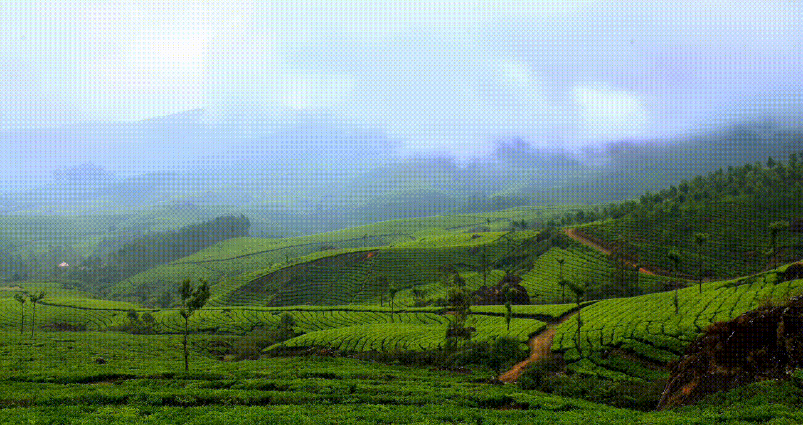
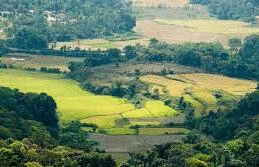

Munnar15 January 2021

Munnar rises as three mountain streams merge
Discover on beautiful weather, Fantastic foods and historical place in Munnar
Read MoreKodakanal 15 november 2021

Discover on beautiful weather, Fantastic foods and historical place in Tamil Nadu
Kodaikanal is a hill station which is located in Dindigul district in the state of Tamil Nadu, India. Its name in the Tamil language means "The Gift of the Forest".
Read MoreCoorg 15 February 2021

Coorg is a hill town in southern India
Coorg is a hill town in southern India. Framed by the Western Ghats mountain range, it’s known for the Raja’s Seat, a simple monument overlooking forests and rice paddies. In the center, the 17th-century Madikeri Fort features 2 stone elephants at the entrance
Read More